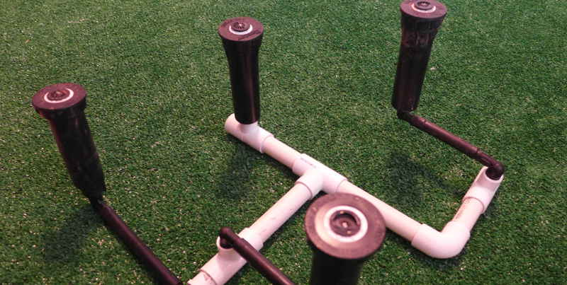

If you have an unlimited water supply then watering a lawn is easy. Take some pipe, a few sprinklers, create large zones and blast away. Water as much and as often as you like until every square foot is a brilliant green.
In fact, until quite recently, the unlimited water scenario was essentially the reality of many urban areas. But now with drought, tapped-out aquifers, urban growth, aging utility infrastructure, and increased awareness of environmental sustainability, a brute force approach to watering is archaic (some would say lawns themselves are archaic – that’s a great topic for future discussion).
More recently, trends to smaller zones, smart controllers, and sensors can all help save water. The problem is that, fundamentally, water is still flowing through pipes that leak and sprinklers that waste a lot of water. So now, just like gardens, we’re back to hand-watering lawns. Frustratingly, even for a small lawn, that takes hours! And that’s exactly where Growver comes in.

What would the perfect irrigation system look like? That’s the question that started Growver development and naturally, this is something I still think about a lot.
Most in-ground irrigation systems use the same pipe-in-ground and sprinklers for both lawns and gardens, but it’s far from ideal for either situation.
For performance and water saving, Drip Irrigation is widely regarded as the way to go for gardens, especially if the time and money is invested to properly install and adjust the drip emitters for each plant. But unfortunately common feedback is that drip systems work great for a few years, but eventually suffer from hard-to-locate leaks, breaks in the fairly fragile piping, and root fibers entering emitters. Maintenance costs are high, and often result in replacing, rather than repairing, large sections of a system.
So now we’re back to hand watering of gardens. It’s very efficient, inexpensive, and dependable. Relaxing too, but only if you have the time, state-of-mind, and never leave town. For everyone else, I’m working to find a simple, reliable robotic solution to garden watering.